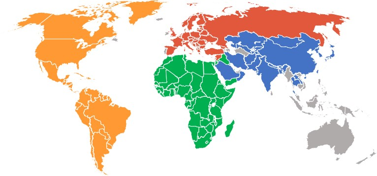

the beating heart of the world
With 610,000 people dying of heart disease in the United States every year, heart disease is the leading cause of death for both men and women 1. Even when heart disease does not cause death, it can cause disability and decrease the overall quality of life2. We want to raise awareness about heart disease, the different factors which contribute to this disease, and ways that one can mitigate their risk.
CVDs are the number 1 cause of death globally
An estimated 17.9 million people died from CVDs in 2016
Of these deaths, 85 % are due to heart attack and stroke.
Most CVD can be prevented by addressing behavioural risk factors
Risk factors for noncommunicable disease
Many deaths can be directly attributed to modifiable risk factors
High blood pressure accounts for 13% of deaths globally
Tobacco use accounts for 9%
High blood sugar accounts for 6%
Physical inactivity accounts for 6% as well
Obesity accounts for 5%
Global Atlas of Cardiovascular Disease
Risk Factors to Cardiovascular Disease
There are many factors which contribute to having a heart attack or stroke. Two of the leading modifiable risk factors are blood pressure and cholesterol
Blood pressure is the pressure of your blood on the walls of your arteries as your heart pumps it around your body. It’s a vital part of how your heart and circulation works. Your blood pressure naturally goes up and down all the time, adjusting to your heart’s needs depending on what you are doing. High blood pressure is when your blood pressure is persistently higher than normal. A blood pressure reading under 120/80mmHg is considered optimal. Readings over 120/80mmHg and up to 139/89mmHg are in the normal to high normal range. Blood pressure that’s high over a long time is one of the main risk factors for heart disease. As you get older, the chances of having persistently high blood pressure increases. It’s very important to get your blood pressure checked regularly, and if it’s persistently high it needs to be controlled. Uncontrolled high blood pressure can lead to a heart attack or stroke. It may also affect your kidneys. The medical name for high blood pressure over a long period of time is hypertension.
Association between mean systolic blood pressure and cardiovascular disease in countries with a population greater than 20 million people
High blood pressure accounts for 13% of deaths globally
High blood pressure is the leading cause of cardiovascular disease
Average Cholesterol Levels in Adults 25 Years and Older
High cholesterol is another risk for cardiovascular disease.
Summary
Heart disease is a leading cause of mortality and morbidity world wide. Knowing your risk factors is the first step in preventing a heart attack or stroke
For more information, visit
Heart Foundation
American Heart Association
World Health Organisation